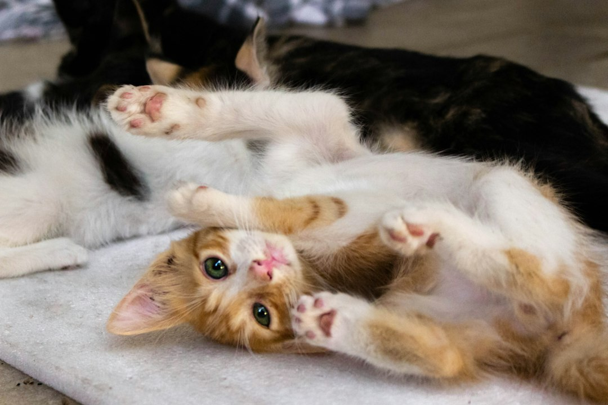
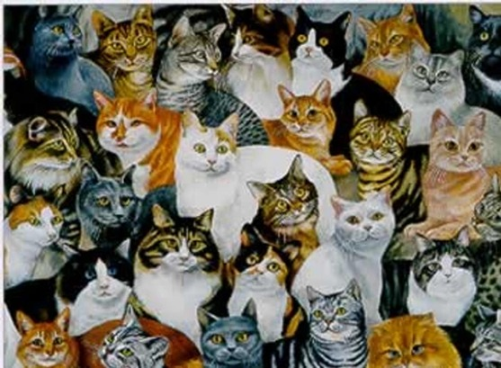
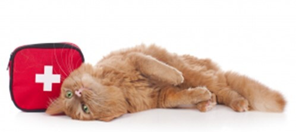
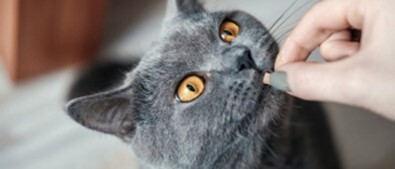
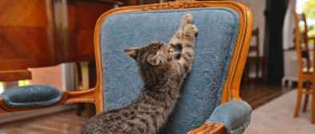

Introduction
Welcome to "Catlive" your one-stop guide to the enchanting world of feline companions. Whether you're a passionate cat owner, considering adopting a cat, or just curious about these fascinating creatures, this document is designed to provide a comprehensive overview of all things cat-related.
Share Your Passion for Cats
Discover the feline universe through Catlive Chat.
Table of Contents
History of Cats
Explore the captivating history of cats, from their ancient origins to their roles in various cultures. Learn about their evolution alongside humans and the enduring bond between cats and people.
Popular Cat Breeds
Discover the diversity of cat breeds, each with its own unique characteristics, temperament, and charm. Whether you prefer the sleek Siamese, the regal Persian, or the playful Bengal, find the perfect match for your lifestyle!
Cat Care and Health
Ensure the well-being of your feline companion with essential tips on cat care and health. From grooming and vaccinations to regular veterinary check-ups, this section covers everything you need to keep your cat happy and healthy.
Behavior and Communication
Decode the language of cats by understanding their behavior and communication cues. Explore the meaning behind different meows, purrs, and body language, fostering a deeper connection with your furry friend.
Feeding and Nutrition
Navigate the world of cat nutrition, from choosing the right cat food to understanding dietary requirements at different life stages. Learn about portion control, treats, and maintaining a balanced diet for optimal feline health.
Training and Enrichment
Discover effective training techniques and enrichment activities to stimulate your cat's mind and body. Whether teaching basic commands or providing engaging toys, enhance the quality of life for both you and your feline companion.
Fun Facts
Uncover intriguing and entertaining facts about cats that showcase their unique qualities and behaviors. From ancient superstitions to modern-day trivia, these fun facts celebrate the quirks and charms of our beloved cats.
Resources
Explore additional resources for further information on cat care, behavior, and community: